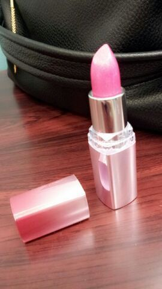

やあ(*´∨`*)ノ
ろってぃ−だよ.
今日も１日お疲れ様です ♪
皆さんは GWはどこかに
出かけたりしましたか?
皆さん元気にしてますか−(^^)?
そして今日で プリンシパル
7公演目 無事 終了致しました !
もう ゆ−てる間に折り返し時点
突入やなぁぁ (・∨・)
今日は
お昼の部では誠一さんに立候補し,
夜の部では 小坊主くんに立候補しました!
夜の部では 『女中4』に
なれました !
皆さん 本当にありがとうございす !
嬉しかったです☆
でもっ! もっと成長し
上にいけるように頑張ります !
愛用している化粧品 (〃ω〃)

メンバー達がこの色 可愛い〜♪
って言ってくれて
嬉しくって... (〃∨〃)いやん.
ラメがキラキラして
キレイなんですよねん♪
いつも赤を使っている
口の色にこだわりのある
あみ♪が 認めてくれた (^^)
え、ピンクもいいかも...
初めて 新しい色に挑戦したく
なったと...☆笑
嬉しいよ、ありがとう.
ではでは 引き続き
頑張ります !
ろってぃ−でした (/*^^*)/